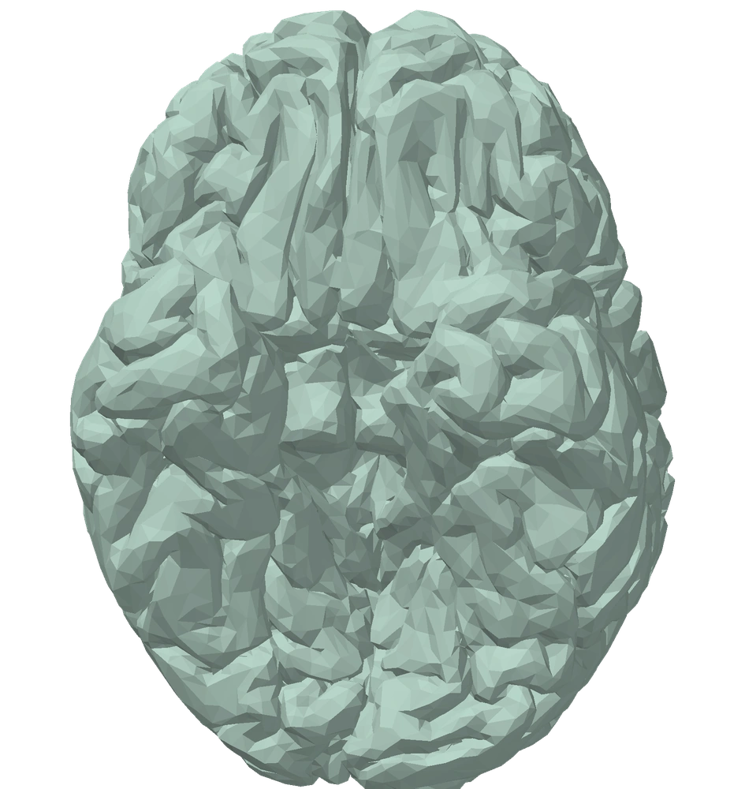
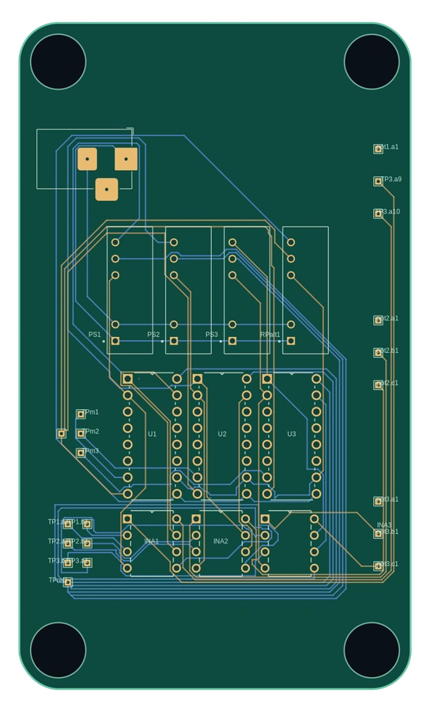

I build what science needs next.
I'm Wesley Lohr, a biomedical engineer working where electronics, anatomy, precision fabrication, and experimental science meet. I design the instruments that turn ambitious research questions into measurements you can trust.

CAD, circuits, models, measurements.
Engineering, up close.
A working preview of two real design files. Open either project to inspect the geometry, explore the board layers, and examine the technical source.

Multichannel amplifier PCB
A closer look at board-level design for sensitive measurements: copper routing, test points, component interfaces, and physical layout.
Brain surface geometry
A detailed 3D anatomical model ready to inspect, rotate, and explore in the browser, with its original mesh available for review.
Built to show the work,
not just describe it.
This portfolio is meant to document the engineering itself: the design file, the constraints that drove it, and how the result was tested. This initial edition uses only two supplied files. As the portfolio grows, each entry can add photos, measurements, source code, and design rationale—without losing the direct link to the underlying work.